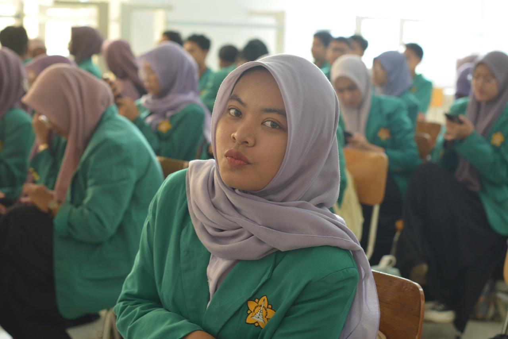

Halo, saya Rizqa Hasana
Mahasiswi Kedokteran Hewan Universitas Syiah Kuala
Selamat datang di portofolio saya. Semoga informasi yang saya bagikan dapat bermanfaat bagi sesama mahasiswa, pecinta hewan, maupun masyarakat luas.
Lihat Pembelajaran Saya
Tentang Saya
Rizqa Hasana Putri Bandaro
Saya adalah mahasiswi Kedokteran Hewan Universitas Syiah Kuala. Disini saya berbagi pengetahuan saya tentang perawatan luka dirumah untuk hewan peliharaan dan pencegahan penyakit umum pada hewan peliharaan.
Keinginan saya adalah untuk menjembatani kesenjangan informasi antara pemilik hewan peliharaan dan praktik medis yang baik, memastikan setiap hewan mendapatkan perawatan terbaik, bahkan untuk penanganan awal di rumah.
Pembelajaran: Tips Perawatan Hewan
1. Kenali Jenis Luka yang Bisa Dirawat di Rumah
- Goresan atau sayatan kecil
- Luka lecet atau luka dangkal tanpa perdarahan hebat
- Luka akibat garukan/gatal
- Luka di area kulit yang tidak terlalu sensitif
*Jika luka dalam, berdarah, atau bernanah, segera bawa ke dokter hewan.
2. Langkah Perawatan Luka di Rumah
- Bersihkan area luka dengan air bersih.
- Potong bulu sekitar luka.
- Gunakan obat yang direkomendasikan dokter hewan.
- Gunakan perban dan *collar* (corong) agar tidak dijilat.
- Berikan nutrisi untuk mendukung penyembuhan.
3. Pencegahan Penyakit Umum
- Vaksinasi rutin sesuai jadwal dokter.
- Pencegahan parasit (obat cacing 3 bln/kutu bulanan).
- Menjaga kebersihan kandang dan hewan.
- Pemberian nutrisi seimbang (hindari coklat, bawang, garam).
- Pemeriksaan kesehatan rutin (minimal 2 bulan sekali).